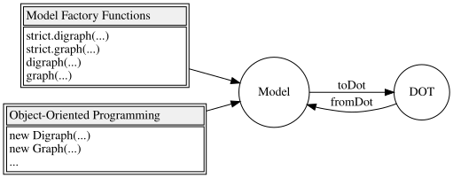
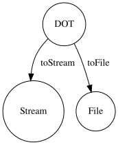
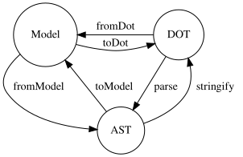

Module ts-graphviz - v3.0.13


Key Features ✨
ts-graphviz package provides models and ASTs for the Graphviz DOT language fully integrated with TypeScript.
- TypeScript-friendly API
- It provides models in the DOT language. TypeScript type definitions are also provided for attributes and even attribute types.
- Freedom from programming paradigms
- Designed to be object-oriented, it provides APIs that can be adapted to both imperative and declarative APIs. You can choose the paradigm that best fits your project.
- Suitable for any use cases
- Both a high-layer API to provide models and a low-layer API to handle ASTs are provided to address any use cases.
- Modular and Extensible
- The library is split into multiple packages, each serving a specific purpose. This modular design allows users to pick and choose the functionality they need, resulting in improved maintainability and flexibility.
- Cross Platform
- It supports both Node.js and Deno and Browser.
- Customizable
- It provides a way to extend the library's type system to customize graph visualization solutions to meet specific needs.
Installation 💽
Node.js
This package can then be installed using a package manager.
# npm
$ npm install -S ts-graphviz
# or yarn
$ yarn add ts-graphviz
# or pnpm
$ pnpm add ts-graphviz
Note Want to try before installing? Check out Runkit to see how it works.
Deno 🦕
Deno v1.28 and above supports npm.
You can install and use the package by specifying the following:
import { toDot } from 'npm:ts-graphviz';
Usage 📑
This section provides an overview of the package.
For more detailed API specifications, please refer to the comments in the TypeScript type definitions and the document automatically generated based on them.
ts-graphviz Module 🚩
This module provides Model, an interface for working with the DOT language in JavaScript/TypeScript.

Object-Oriented ❤️
Model is designed to be object-oriented and provides classes Digraph, Graph, Subgraph, Node, and Edge.
Provides a toDot function to convert Model to DOT (DOT language string).
import { attribute as _, Digraph, Subgraph, Node, Edge, toDot } from 'ts-graphviz';
const G = new Digraph();
const A = new Subgraph('A');
const node1 = new Node('node1', {
[_.color]: 'red'
});
const node2 = new Node('node2', {
[_.color]: 'blue'
});
const edge = new Edge([node1, node2], {
[_.label]: 'Edge Label',
[_.color]: 'pink'
});
G.addSubgraph(A);
A.addNode(node1);
A.addNode(node2);
A.addEdge(edge);
const dot = toDot(G);
// digraph {
// subgraph "A" {
// "node1" [
// color = "red",
// ];
// "node2" [
// color = "blue",
// ];
// "node1" -> "node2" [
// label = "Edge Label",
// color = "pink",
// ];
// }
// }
Advanced Usage
Custom Class 🤖
You can also add your own implementation by inheriting from the class.
import { Digraph, Node, Edge, EdgeTargetTuple, attribute as _, toDot } from 'ts-graphviz';
class MyCustomDigraph extends Digraph {
constructor() {
super('G', {
[_.label]: 'This is Custom Digraph',
});
}
}
class MyCustomNode extends Node {
constructor(id: string) {
super(`node_${id}`, {
[_.label]: `This is Custom Node ${id}`,
});
}
}
class MyCustomEdge extends Edge {
constructor(targets: EdgeTargetTuple) {
super(targets, {
[_.label]: 'This is Custom Edge',
});
}
}
const digraph = new MyCustomDigraph();
const node1 = new MyCustomNode('A');
const node2 = new MyCustomNode('B');
const edge = new MyCustomEdge([node1, node2]);
digraph.addNode(node1);
digraph.addNode(node2);
digraph.addEdge(edge);
const dot = toDot(digraph);
// digraph "G" {
// label = "This is Custom Digraph";
// "node_A" [
// label = "This is Custom Node A";
// ];
// "node_B" [
// label = "This is Custom Node B";
// ];
// "node_A" -> "node_B" [
// label = "This is Custom Edge";
// ];
// }
Models Context API ( with method) 🧅
You can also use the Models Context API to create custom classes for objects generated inside of Graph.
The with methods of Digraph, Graph, and Subgraph, which are implementations of GraphBaseModel, are provided to predefine custom models.
const g = new Digraph();
g.with({
Node: MyCustomNode,
Edge: MyCustomEdge,
});
const a = g.createNode('A'); // MyCustomNode
const b = g.createNode('B'); // MyCustomNode
g.createEdge([a, b]); // MyCustomEdge
const dot = toDot(g);
// digraph {
// "node_A" [
// label = "This is Custom Node A";
// ];
// "node_B" [
// label = "This is Custom Node B";
// ];
// "node_A" -> "node_B" [
// label = "This is Custom Edge";
// ];
// }
fromDot function ⏪
The status of this function is ! beta.
The main scenario for using this library is to use the toDot function, but it also supports conversions in the reverse direction.
By converting DOT to Model, a portion of the code can be written in the DOT language.
const G = fromDot(
`digraph {
node_A [
label = "This is a Label of Node A";
];
}`,
);
G.edge(['node_A', 'node_B']);
const dot = toDot(G)
// digraph {
// "node_A" [
// label = "This is a Label of Node A";
// ];
// "node_A" -> "node_B";
// }
Declarative API 😎
When creating Graph or Digraph, you can use Model Factory to provide a notation more similar to the DOT language.
Model also has a declarative API, so you can consistently choose a declarative paradigm.
import { attribute as _, digraph, toDot } from 'ts-graphviz';
const G = digraph('G', (g) => {
const a = g.node('aa');
const b = g.node('bb');
const c = g.node('cc');
g.edge([a, b, c], {
[_.color]: 'red'
});
g.subgraph('A', (A) => {
const Aa = A.node('Aaa', {
[_.color]: 'pink'
});
const Ab = A.node('Abb', {
[_.color]: 'violet'
});
const Ac = A.node('Acc');
A.edge([Aa.port('a'), Ab, Ac, 'E'], {
[_.color]: 'red'
});
});
});
const dot = toDot(G);
// digraph "G" {
// "aa";
// "bb";
// "cc";
// subgraph "A" {
// "Aaa" [
// color = "pink",
// ];
// "Abb" [
// color = "violet",
// ];
// "Acc";
// "Aaa":"a" -> "Abb" -> "Acc" -> "E" [
// color = "red",
// ];
// }
// "aa" -> "bb" -> "cc" [
// color = "red",
// ];
// }
Note Of course, we also provide an API for creating strict mode graphs.
import { strict, toDot } from 'ts-graphviz';
const G = strict.graph(...);
const dot = toDot(G);
// strict graph {
// }
Advanced Usage
Models Context API ( withContext function ) 💈
The withContext function returns a Model Factory function.
This Model Factory provides a means to replace RootGraphModel with a custom class, such as Digraph or Graph.
This API provides a way to integrate declarative APIs and custom classes.
const { digraph } = withContext({
Digraph: MyCustomDigraph,
Node: MyCustomNode,
Edge: MyCustomEdge,
});
const G = digraph((g) => {
const a = g.node('A'); // MyCustomNode
const b = g.node('B'); // MyCustomNode
g.edge([a, b]); // MyCustomEdge
});
const dot = toDot(g);
// digraph "G" {
// label = "This is Custom Digraph";
// "node_A" [
// label = "This is Custom Node A";
// ];
// "node_B" [
// label = "This is Custom Node B";
// ];
// "node_A" -> "node_B" [
// label = "This is Custom Edge";
// ];
// }
@ts-graphviz/adapter Module 🔌
This module status is
.
Provides an interface to run Graphviz dot commands.
Graphviz must be installed so that the dot command can be executed.
Execute the dot command to output a DOT language string to a stream or file.

This module provides the following functions.
- The
toStreamfunction converts DOT to Stream.import { toStream } from 'ts-graphviz/adapter';
const dot = `
digraph example {
node1 [
label = "My Node",
]
}
`;
const stream = await toStream(dot, { format: 'svg' });
// Node.js
stream.pipe(process.stdout);
// Deno
await stream.pipeTo(Deno.stdout.writable); - Writes DOT to a file at the specified path
toFilefunctionimport { toFile } from 'ts-graphviz/adapter';
const dot = `
digraph example {
node1 [
label = "My Node",
]
}
`;
await toFile(dot, './result.svg', { format: 'svg' });
Note Designed to work with Node.js and Deno, Stream is runtime native.
@ts-graphviz/ast Module 🔢
This module status is
An API is provided to handle ASTs for advanced use.

The following functions are provided as described in the state transition diagram.
- The
fromModelfunction converts Model to AST. - The
toModelfunction converts AST to Model. - The
stringifyfunction converts AST to DOT. - The
parsefunction to convert from DOT to AST.
Note As you can see from the above figure, the
toDotfunction provided by thets-graphvizpackage is a composite offromModelandstringify. ThefromDotfunction is a composite ofparseandtoModel.
Detailed usage is TODO. Please refer to the TypeScript type definition.
The parse function and AST
import { parse } from '@ts-graphviz/ast';
const ast = parse(`
digraph example {
node1 [
label = "My Node",
]
}
`);
// {
// type: 'Dot',
// location: {
// start: { offset: 3, line: 2, column: 3 },
// end: { offset: 68, line: 7, column: 1 }
// },
// children: [
// {
// id: {
// value: 'example',
// quoted: false,
// type: 'Literal',
// location: {
// start: { offset: 11, line: 2, column: 11 },
// end: { offset: 18, line: 2, column: 18 }
// },
// children: []
// },
// directed: true,
// strict: false,
// type: 'Graph',
// location: {
// start: { offset: 3, line: 2, column: 3 },
// end: { offset: 67, line: 6, column: 4 }
// },
// children: [
// {
// id: {
// value: 'node1',
// quoted: false,
// type: 'Literal',
// location: {
// start: { offset: 25, line: 3, column: 5 },
// end: { offset: 30, line: 3, column: 10 }
// },
// children: []
// },
// type: 'Node',
// location: {
// start: { offset: 25, line: 3, column: 5 },
// end: { offset: 63, line: 5, column: 6 }
// },
// children: [
// {
// key: {
// value: 'label',
// quoted: false,
// type: 'Literal',
// location: {
// start: { offset: 39, line: 4, column: 7 },
// end: { offset: 44, line: 4, column: 12 }
// },
// children: []
// },
// value: {
// value: 'My Node',
// quoted: true,
// type: 'Literal',
// location: {
// start: { offset: 47, line: 4, column: 15 },
// end: { offset: 56, line: 4, column: 24 }
// },
// children: []
// },
// location: {
// start: { offset: 39, line: 4, column: 7 },
// end: { offset: 57, line: 4, column: 25 }
// },
// type: 'Attribute',
// children: []
// }
// ]
// }
// ]
// }
// ]
// }
Extending the Type System 🧰
The status of this feature is
With ts-graphviz, you can extend the library's type system to customize graph visualization solutions to meet specific needs.
Note To allow for customization, types are named with the
$symbol.If you want to extend a type definition in cases not listed below, check the source code to see if you can extend it with
$....If not, please create an issue or pull request.
Use Case: Specifying Custom Graph Layout and Output Formats
import { $keywords } from '@ts-graphviz/common';
import { toFile } from '@ts-graphviz/adapter';
// 1. Declare the '@ts-graphviz/adapter' module.
declare module '@ts-graphviz/adapter' {
export namespace Layout {
// 2. Define the $values interface in the Layout namespace.
// 3. Inherit from $keywords<'my-custom-algorithm'> and specify the name of the new layout engine in <...>.
export interface $values extends $keywords<'my-custom-algorithm'> {}
}
export namespace Format {
// 4. Define the $values interface in the Format namespace.
// 5. Inherit from $keywords<'mp4'> and specify the name of the new output format in <...>.
export interface $values extends $keywords<'mp4'> {}
}
}
toFile('digraph { a -> b }', '/path/to/file', {
layout: 'my-custom-algorithm',
format: 'mp4',
});
Use Case: Adding Custom Attributes
import { $keywords } from '@ts-graphviz/common';
import { digraph, toDot, attribute as _ } from 'ts-graphviz';
// 1. Declare the '@ts-graphviz/common' module.
declare module '@ts-graphviz/common' {
export namespace GraphAttributeKey {
// 2. Define the $values interface in the GraphAttributeKey namespace.
// 3. Inherit from $keywords<'hoge'> and specify the name of the new attribute in <...>.
export interface $values extends $keywords<'hoge'> {}
}
export namespace Attribute {
// 4. Define the $keys interface in the Attribute namespace.
// 5. Inherit from $keywords<'hoge'> and specify the name of the new attribute in <...>.
export interface $keys extends $keywords<'hoge'> {}
// 6. Define the $types interface in the Attribute namespace.
// 7. Specify the new attribute in the key and define its corresponding value in the value.
export interface $types {
hoge: string;
}
}
}
console.log(
toDot(
digraph((g) => {
g.set(_.hoge, 'fuga');
}),
),
);
Deep dive 🏊♂️
Architecture 🏛
See ARCHITECTURE.md for more details.
Security 🛡️
See SECURITY.md for more details.
Who's using ts-graphviz 📜
Note Let us know that you're using
ts-graphvizon GitHub Discussions 🙏
Related Projects 💫
Related projects can be found at ts-graphviz GitHub Organization.
The TypeScript/JavaScript ecosystem provides a variety of OSS with the goal of making Graphviz more connected and easier to use.
Contributors 👥
Thanks goes to these wonderful people (emoji key):


This project follows the all-contributors specification. Contributions of any kind welcome!
How to Contribute 💪
The easiest way to contribute is to use the library and star repository.
Questions 💭
Feel free to ask questions on GitHub Discussions.
Report bugs / request additional features 💡
Please register at GitHub Issues.
Development / Bug Fixes 🧑💻
See CONTRIBUTING.md.
Financial Support 💸
Support this project by becoming a sponsor. Your logo will show up here with a link to your website. Become a sponsor

Thank you to all our backers! 🙏 Become a backer

Please support ts-graphviz on Open Collective or GitHub Sponsors.
Note Even just a dollar is enough motivation to develop 😊
Changelog 📜
See CHANGELOG.md for more details.
ts-graphviz for Enterprise 🏢
Available as part of the Tidelift Subscription.
The maintainers of ts-graphviz and thousands of other packages are working with Tidelift to deliver commercial support and maintenance for the open-source dependencies you use to build your applications. Save time, reduce risk, and improve code health, while paying the maintainers of the exact dependencies you use.
License ⚖️
This software is released under the MIT License, see LICENSE.